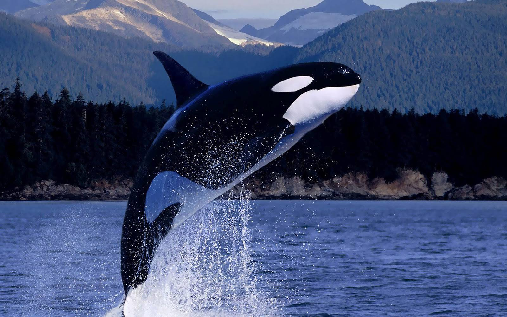
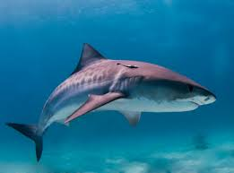

HEADER

L'orque, ou épaulard (Orcinus orca), est une espèce de mammifères
marins du sous-ordre des cétacés à dents, les odontocètes. Elle a une
répartition cosmopolite ; elle vit dans les régions arctiques et
antarctiques jusqu'aux mers tropicales. Son régime alimentaire est
très diversifié, bien que les populations se spécialisent souvent dans
des types particuliers de proies. Certaines se nourrissent de
poissons, tandis que d'autres chassent les mammifères marins tels que
les lions de mer, les phoques, les morses et même de grandes baleines
(généralement des baleineaux). Les orques sont considérées comme des
superprédateurs. Les anglophones les surnomment baleines tueuses
(killer whales), bien que le genre Orcinus soit propre aux seules
orques.
Cliqué ici pour une videour l'orque
Le dauphin possède une particularité : il a une respiration volontaire
et doit “penser” à respirer en remontant régulièrement à la surface de
l'eau pour replonger ensuite en apnée. C'est pourquoi le mammifère ne
dort jamais complètement : quand une partie de son cerveau se repose,
une autre continue de fonctionner. À l'état sauvage, ils consomment de
préférence des poissons (maquereaux, sprats, merlans…), mais aussi des
céphalopodes (calamars, poulpes, seiches…) ou encore des crustacés
(crabes, crevettes…).

Les trois requins les plus dangereux au monde sont le grand requin
blanc, le requin tigre et le requin bouledogue. À eux trois, ces
prédateurs sont responsables de la grande majorité des attaques
mortelles.9 Le requin-tigre est un grand requin commun dans le monde
entier. Au large de l'Amérique du Nord, il est habituellement présent
sur la côte est de Cape Cod à la Floride et dans le golfe du Mexique,
tandis que sur la côte ouest, on le trouve à partir de la Californie
vers le sud.
Cliqué ici pour une vidéo sur les dauphin